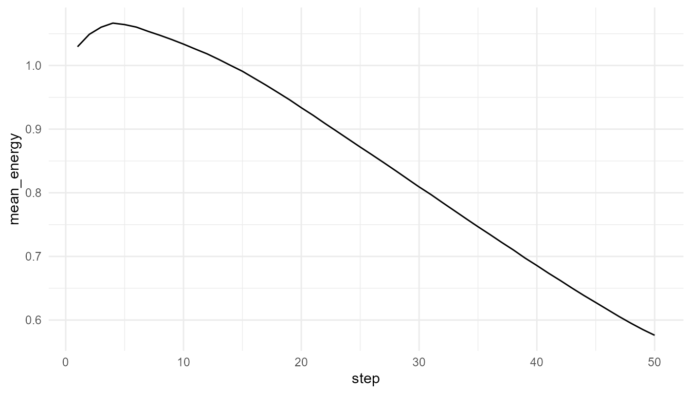
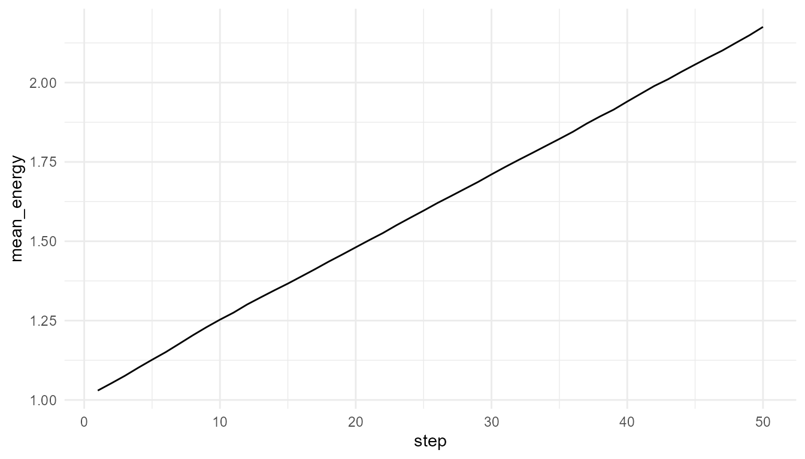
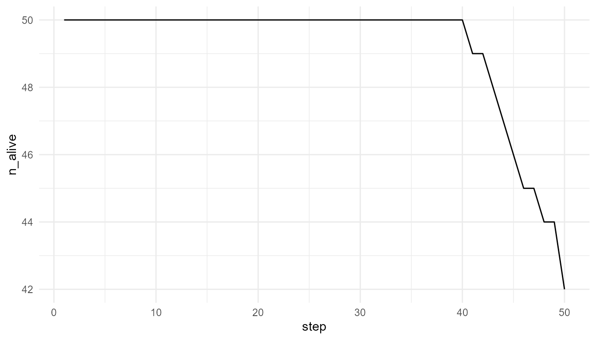
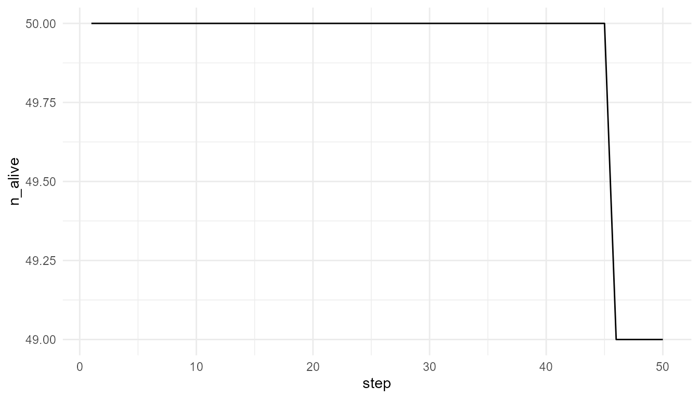

Resources, Metabolism, and Constraint
Source:vignettes/resources-metabolism-constraint.Rmd
resources-metabolism-constraint.RmdPurpose
This article explains the role of resources, metabolism-like dynamics, and constraint in artificial life. Living systems must maintain themselves by interacting with energy and matter. Artificial-life models simplify this idea by representing energy, resources, and costs (Maturana and Varela 1980; Deacon 2011).
The purpose of this chapter is to show why life-like systems require more than agents and rules. They also require limits, costs, resources, and maintenance.
The guiding question is:
Why does life-like behavior require constraint and energy-like accounting?
Why resources matter
Resources are central to artificial life because they make survival conditional. If agents could move, reproduce, and persist without cost, the model would lose an important life-like feature: the need for ongoing maintenance.
In biological systems, organisms require energy and matter to survive. They must obtain resources, transform them, repair themselves, and maintain organization over time.
In artificial-life models, this is usually simplified. Resources may be represented as numeric values in an environment, and agents may have an energy variable that increases or decreases depending on their actions.
This abstraction allows learners to explore a basic life-like principle:
Persistence requires maintenance.
Resources and survival
In artificial-life models, agents may gain energy by consuming resources and lose energy through activity. This creates a basic survival condition: an agent must maintain enough energy to persist.
For example:
- movement may reduce energy;
- resource consumption may increase energy;
- reproduction may require a minimum energy level;
- low energy may lead to death;
- scarce resources may reduce survival;
- abundant resources may support growth.
This creates a direct relationship between agent behavior and environmental condition.
Metabolism-like abstraction
The package does not model real metabolism. Instead, it uses a metabolism-like abstraction.
In this abstraction:
- resources exist in the environment;
- agents consume resources;
- consumption increases energy;
- movement has a cost;
- reproduction may require energy;
- agents may die if energy becomes too low.
This captures the educational idea that life-like systems require ongoing maintenance.
The word “metabolism-like” is important. The model does not simulate biochemical pathways, enzymes, ATP, cellular respiration, or real thermodynamics. It only represents the simplified logic that agents must take in resources and spend energy to continue.
Energy accounting
Energy accounting is useful because it makes trade-offs visible.
An agent cannot simply do everything without consequence. Movement may help the agent reach resources, but movement can also cost energy. Reproduction may increase population size, but it may require a minimum energy threshold. Resource scarcity can make survival harder.
This creates model tension:
| Action or condition | Possible benefit | Possible cost or constraint |
|---|---|---|
| Movement | May help agents find resources | Can reduce energy |
| Resource consumption | Increases energy | Depends on availability |
| High speed | May improve search ability | May be costly in some models |
| Reproduction | Creates offspring | Requires sufficient energy |
| Resource scarcity | Creates selection-like pressure | Can reduce survival |
| Resource regeneration | Supports persistence | May limit or stabilize growth |
These trade-offs make the artificial-life system more dynamic.
Constraint as productive
Constraint is not only limitation. It can structure behavior.
A resource-limited world forces agents into competition. Movement cost makes speed beneficial in some contexts but costly in others. Reproduction thresholds shape when offspring can appear. Carrying capacity limits unlimited growth.
Artificial-life models often become interesting because of the tension between possibility and constraint.
Without constraint, the model may become trivial. If resources are unlimited and actions have no cost, then population growth or survival may be too easy. Constraint creates pressure, and pressure makes dynamics meaningful.
Relation to the package
artificialLifeR includes resource and energy ideas in
simplified form.
| Function | Resource or constraint idea |
|---|---|
create_agents() |
Creates agents with traits such as energy, speed, or efficiency |
simulate_resource_competition() |
Shows how agents interact with limited resources |
simulate_reproduction() |
Uses energy-like thresholds for reproduction |
simulate_population_dynamics() |
Includes resource level and carrying capacity |
measure_life_like_complexity() |
Can summarize variation in traits or energy-related outcomes |
plot_alife_sim() |
Visualizes population or energy change over time |
These functions help learners explore how resource constraints shape life-like dynamics.
Example: resource-limited world
The following example compares two environments. One has low resource regeneration, and the other has higher resource regeneration.
low_resource <- simulate_resource_competition(
n_agents = 50,
steps = 50,
resource_regen = 0.05,
seed = 3
)
high_resource <- simulate_resource_competition(
n_agents = 50,
steps = 50,
resource_regen = 0.40,
seed = 3
)
data.frame(
scenario = c("low resource", "high resource"),
final_alive = c(
tail(low_resource$summary$n_alive, 1),
tail(high_resource$summary$n_alive, 1)
),
final_mean_energy = c(
tail(low_resource$summary$mean_energy, 1),
tail(high_resource$summary$mean_energy, 1)
)
)
#> scenario final_alive final_mean_energy
#> 1 low resource 42 0.5761335
#> 2 high resource 49 2.1753759Interpretation
Changing resource regeneration changes the environment. Agents do not have the same outcomes under different resource constraints. This illustrates why traits and behavior must be interpreted in context.
A careful interpretation is:
The simulation shows how resource availability can influence survival and energy in a simplified artificial-life model.
An overstatement would be:
The simulation fully models metabolism or ecology.
The first statement is appropriate. The second is too strong.
Plot mean energy
plot_alife_sim(
low_resource$summary,
x = "step",
y = "mean_energy",
type = "line"
)
plot_alife_sim(
high_resource$summary,
x = "step",
y = "mean_energy",
type = "line"
)
Interpretation of energy plots
The plots show how average energy changes over time in two simplified environments. The comparison helps learners see that energy is not only an agent property. It is shaped by the relationship between agents, resources, costs, and environmental regeneration.
If the high-resource environment supports higher mean energy, this suggests that resource regeneration affects agent maintenance. If the difference is small, it may suggest that other model rules, such as movement cost or competition, also matter.
Plot survival
plot_alife_sim(
low_resource$summary,
x = "step",
y = "n_alive",
type = "line"
)
plot_alife_sim(
high_resource$summary,
x = "step",
y = "n_alive",
type = "line"
)
Interpretation of survival plots
The number of living agents is a population-level outcome. It emerges from individual energy changes, resource access, movement, and survival rules.
A decline in n_alive may indicate that agents are not
maintaining enough energy. A stable or increasing value may indicate
that resource availability and model rules allow persistence.
However, the plot should not be interpreted as a full ecological survival model. It is a simplified teaching example.
Resource regeneration
The parameter resource_regen represents how quickly
resources return to the environment.
Low regeneration creates stronger constraint.
High regeneration creates more opportunity for agents to maintain
energy.
regen_values <- c(0.02, 0.10, 0.30, 0.60)
regen_results <- lapply(regen_values, function(r) {
sim <- simulate_resource_competition(
n_agents = 50,
steps = 50,
resource_regen = r,
seed = 10
)
data.frame(
resource_regen = r,
final_alive = tail(sim$summary$n_alive, 1),
final_mean_energy = tail(sim$summary$mean_energy, 1)
)
})
do.call(rbind, regen_results)
#> resource_regen final_alive final_mean_energy
#> 1 0.02 39 0.2557759
#> 2 0.10 41 0.8351914
#> 3 0.30 46 1.6060503
#> 4 0.60 50 2.1626640Interpretation of regeneration comparison
This comparison shows how changing one environmental parameter can change model outcomes.
The important lesson is not that one value is universally best. The important lesson is that life-like dynamics depend on environmental conditions. Agents, traits, and rules do not operate in isolation.
Constraint and trait usefulness
A trait is useful only in context. For example, speed may help an agent find resources, but it may also be costly. Efficiency may help an agent convert resources into energy, but its advantage depends on how resources are distributed and regenerated.
This means that traits should not be interpreted as universally good or bad.
| Trait or property | May help when… | May matter less when… |
|---|---|---|
| Speed | Resources are spread out | Movement cost is high or resources are nearby |
| Efficiency | Resources are scarce | Resources are abundant |
| High energy | Reproduction requires energy | Reproduction is not active |
| Low reproduction threshold | Early reproduction is useful | Population pressure is high |
| Resource sensitivity | Environment changes over time | Environment is stable |
This is a key artificial-life lesson:
Traits are meaningful in relation to constraints.
Resources and reproduction
Resources are also important because they can affect reproduction. If reproduction requires energy, then resource access indirectly shapes population growth.
An agent that cannot maintain enough energy may fail to reproduce. An agent that gains enough energy may produce offspring. This connects individual resource use to population-level continuity.
| Level | Example |
|---|---|
| Environment | Resource availability |
| Agent state | Energy level |
| Rule | Reproduce if energy is high enough |
| Population outcome | Growth, decline, or stability |
This link is one reason resource models are central to artificial life.
Relation to origin of life
Origin-of-life research often asks how early systems maintained organization under physical and chemical constraints (Kauffman 1993; Maynard Smith and Szathmáry 1999).
Resource and energy flow are central to that question. A life-like system cannot simply exist as a static object. It must maintain organization over time despite degradation, noise, and environmental change.
The model here is not prebiotic chemistry. It does not simulate real molecules, membranes, hydrothermal vents, metabolism-first theories, or RNA-world chemistry. However, it helps learners understand why self-maintenance and constraint are central to life-like organization.
Relation to autopoiesis and self-maintenance
Some theories of life emphasize self-maintenance and organization. In this view, living systems are not only collections of parts. They are organized systems that continuously produce and maintain their own structure (Maturana and Varela 1980).
artificialLifeR does not model autopoiesis in a full
theoretical or biological sense. However, its resource and energy
abstractions can help introduce the idea that life-like systems require
ongoing maintenance.
A careful interpretation is:
The model illustrates a simplified maintenance problem.
not:
The model fully represents autopoiesis.
What the model captures
The resource model captures several important ideas:
- agents require energy-like resources;
- actions can have costs;
- environments can be more or less supportive;
- resource limits can create competition;
- survival depends on ongoing maintenance;
- population-level outcomes depend on environmental constraint;
- traits are meaningful only in context.
These ideas are central to artificial-life modelling.
What the model does not capture
The model is intentionally simplified. It does not include:
- real metabolism;
- biochemical pathways;
- cellular respiration;
- thermodynamic details;
- molecular self-maintenance;
- real ecological food webs;
- organismal physiology;
- nutrient cycles;
- real prebiotic chemistry.
It is a toy model for conceptual exploration.
Responsible interpretation
It is better to say:
The model illustrates simplified resource and energy-like constraints.
than:
The model simulates real metabolism.
It is better to say:
Resource availability can influence survival and population-level outcomes.
than:
The model explains biological ecology.
It is better to say:
The model helps learners think about maintenance and constraint.
than:
The model proves how life maintains itself.
Careful language preserves the educational value of the simulation.
Educational use
This chapter can support several classroom or self-study questions:
- Why do artificial-life systems need resources?
- What does energy represent in a toy model?
- How does resource regeneration affect survival?
- Why are costs important?
- Why are traits context-dependent?
- How do environmental constraints shape population outcomes?
- What is missing from the model compared with real metabolism?
- How does resource use connect to origin-of-life questions?
These questions help learners understand why life-like behaviour requires more than movement and reproduction. It also requires maintenance under constraint.
Key takeaway
Resources and constraints make artificial-life models dynamic. They create conditions under which agents can persist, fail, reproduce, or change population-level patterns.
artificialLifeR uses simplified resource and energy-like
variables to make the logic of maintenance visible. The package does not
model real metabolism, but it helps learners understand why
self-maintenance, cost, and constraint are central to life-like
organization.